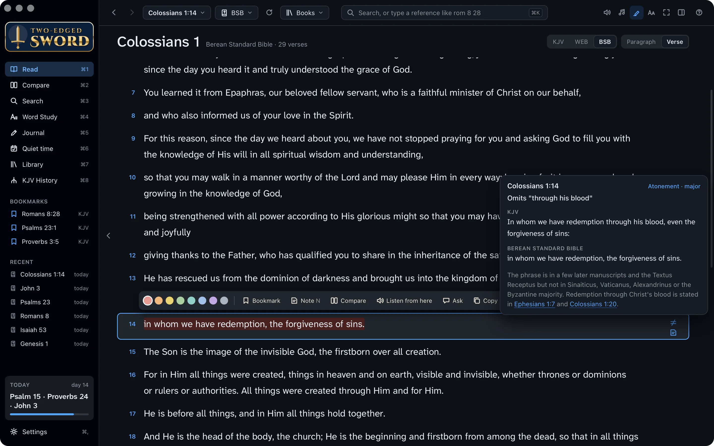
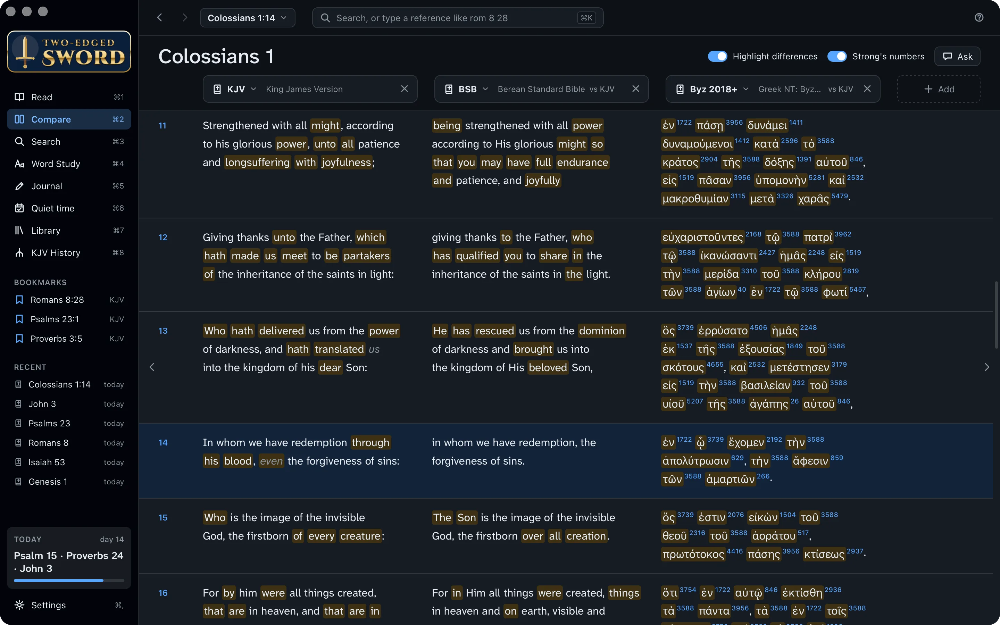
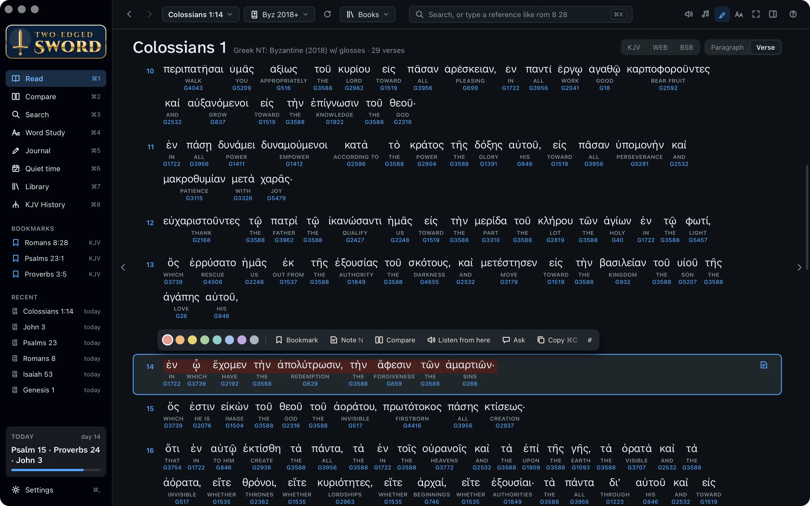
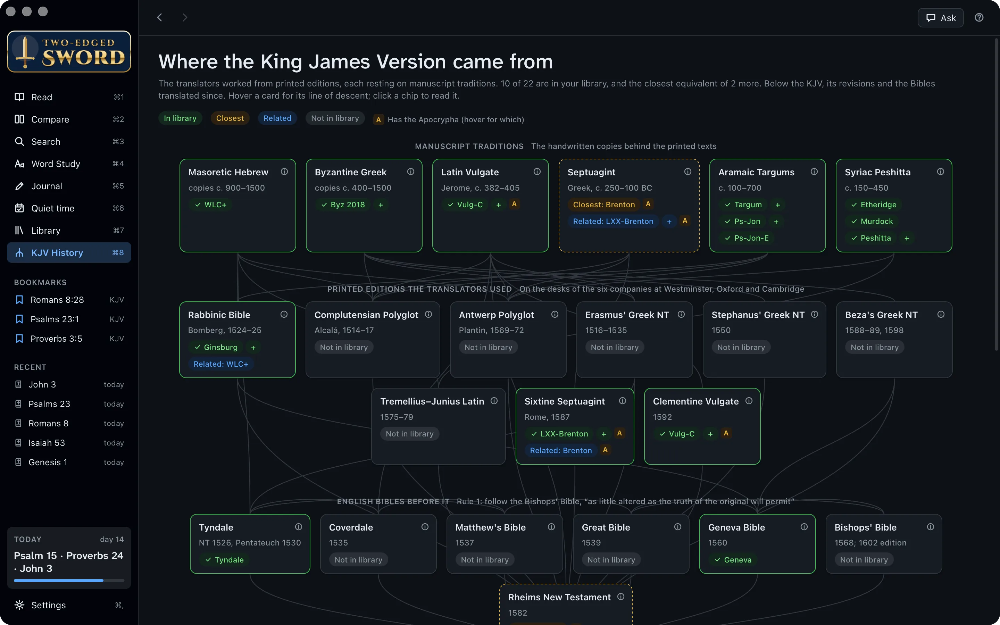
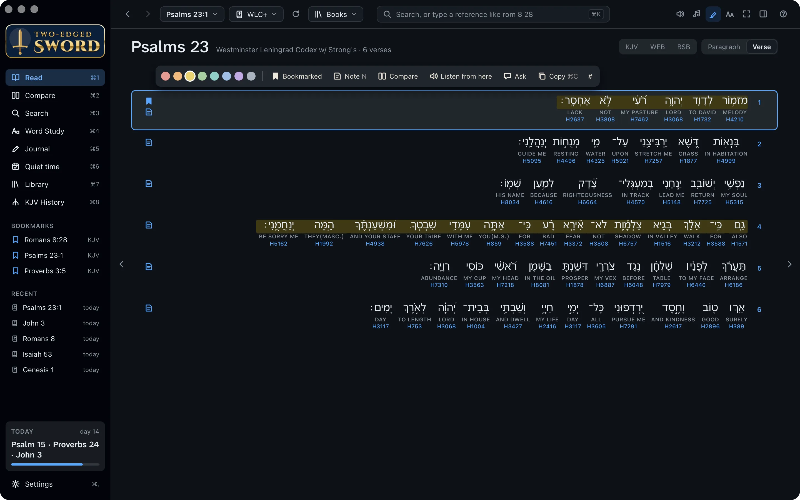
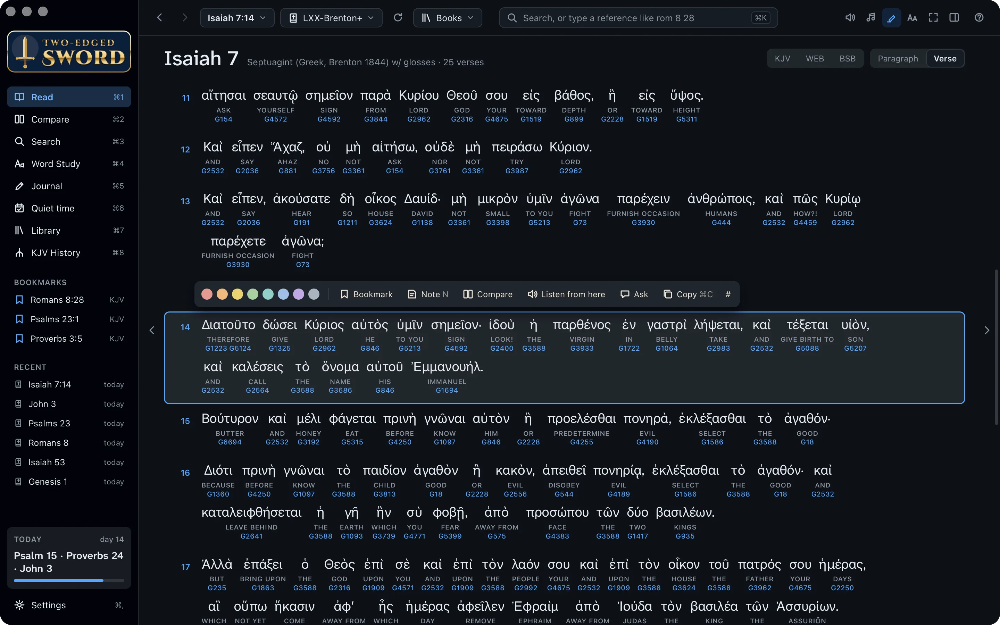
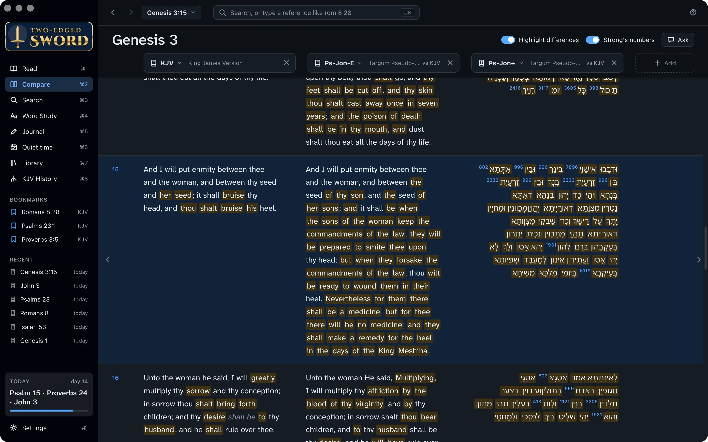
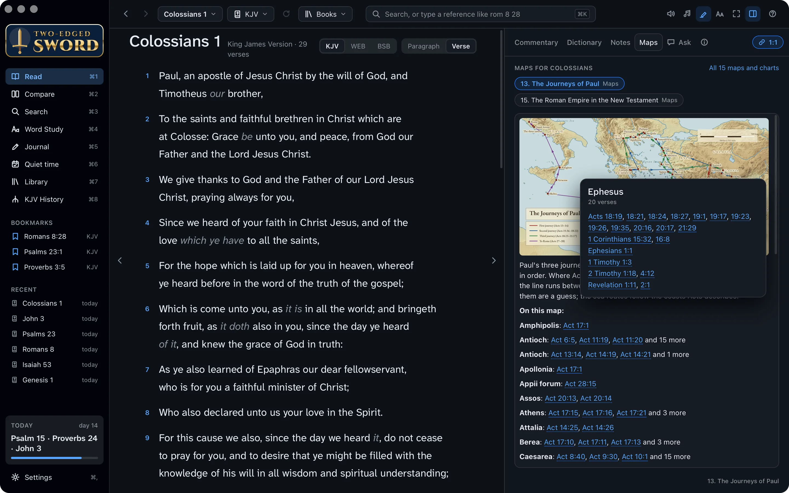
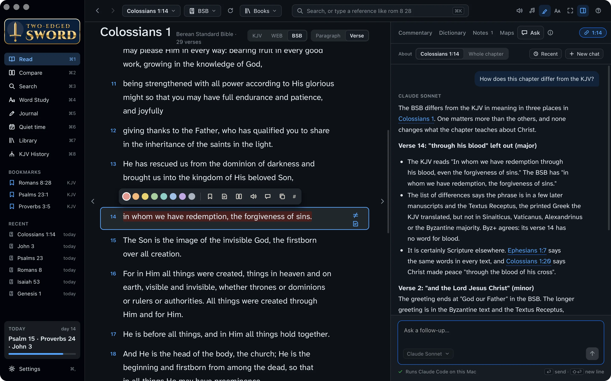
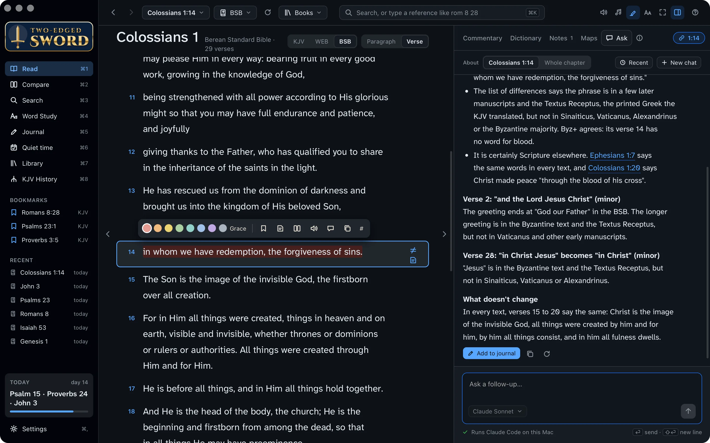

Tutorials › Digging deeper
Answer a
hard question.
Why does one Bible leave out words another keeps? Follow a question from the verse to the manuscripts, and learn the app's deeper tools as you go.
Howbeit when he, the Spirit of truth, is come, he will guide you into all truth.John 16:13
I'm using a
The steps and keys below follow your choice.
The story
After Thursday's group at Hillside Church, Anna stays behind with a question. In Colossians 1:14 your King James reads “in whom we have redemption through his blood, even the forgiveness of sins”, but her Bible has no “through his blood”. Has something been taken out?
It's a good question, and it deserves a careful answer. By the end of this tutorial you'll know where the words come from, where else Scripture says them, and why our redemption in Christ doesn't hang on one manuscript. Ask the Spirit of truth to guide you as you look.
- The differenceand why it's there
- The Greekword by word
- The KJV's sourceson its family tree
- An answerkept in your journal
Spot the difference.
Anna reads a modern translation, so open the verse in one. The app marks every place where a translation differs in meaning from the King James, and says why.
- Press ⌘K, type col 1 14 and press ↩.
- From the Bible menu at the top, choose BSB, the Berean Standard Bible.
- Make sure the switch at the top of the chapter is on Verse, so each verse has its own line. The marks only show there.
- A ≠ beside verse 14 marks a difference. Click it. A card shows both readings, what changed, and which manuscripts each follows.

Major and minor. A bold ≠ is a difference in meaning, such as an omitted phrase or a changed name of God; a faint one is minor. The app has these lists for the BSB, ASV, Revised Version, Darby and other built-in Bibles, and for the NIV, ESV and others if you add them.
Compare side by side.
Now set the two translations next to each other, with the Greek beside them, and let the app show you every word that differs.
- Press ⌘2 for Compare. It opens at the passage you were reading.
- Each column has a Bible menu. Choose KJV, BSB and Byz+, the Byzantine Greek New Testament. + Add puts another column alongside; × on a column removes it.
- Turn on Highlight differences at the top. Wording that differs from the first column is marked.
- Look at verse 14. The KJV has “through his blood”; the BSB and the Greek do not.

Read the Greek.
You don't need to know Greek to read it word by word. The Byzantine text is the form of the New Testament found in most Greek manuscripts, so it's a fair witness to what most copies say.
- Back in Read (⌘1), choose Byz+ from the Bible menu.
- Each Greek word sits over its English and its Strong's number. Verse 14 reads in whom we have the redemption, the forgiveness of the sins. There is no word for blood.
- Point at a word for its grammar, or at a number for its dictionary entry. Click a word to look it up.
- Now open Ephesians 1:7. There the same words stand in every text: διὰ τοῦ αἵματος αὐτοῦ, “through his blood”.

In whom we have redemption through his blood, the forgiveness of sins, according to the riches of his grace.Ephesians 1:7
Nothing is lost. The truth isn't taken away: six verses later, Colossians 1:20 says Christ made peace “through the blood of his cross”, and Ephesians 1:7 says the same words as the KJV's 1:14. Many think a copyist who knew Ephesians well wrote them into Colossians too.
Read it in its setting. A verse on its own can be made to say almost anything, so take time over the whole passage and let Scripture explain Scripture. Here, Colossians 1 read alongside Ephesians 1 leaves no doubt: we are redeemed through the blood of Christ. And as you study, ask the Holy Spirit to open His word to you. Jesus promised that He would guide us into all truth (John 16:13), and we can pray with the psalmist, “Open thou mine eyes, that I may behold wondrous things out of thy law” (Psalm 119:18).
Trace the KJV's sources.
So where did the KJV's reading come from? The translators of 1611 worked from printed Greek editions, which rested on the manuscripts their editors had. KJV History draws the whole family tree.
- Press ⌘8 for KJV History.
- At the top are the manuscript traditions: the Masoretic Hebrew, the Byzantine Greek, the Latin Vulgate, the Septuagint, the Targums and the Syriac Peshitta. Under them are the printed editions the translators used, such as Erasmus' and Beza's Greek New Testaments, and then the English Bibles before the KJV, from Tyndale to the Bishops' Bible.
- Point at a card to light up what it came from and what came from it.
- The labels on each card show what you have: click one to read it. The ⓘ on a card says what it is and what it gave the KJV.

Below the KJV. Scroll down for its revisions, from Webster's and the Revised Version to the ESV, and the Bibles translated afresh since. Ask at the top right answers questions about the history.
The Hebrew and the Septuagint.
The Old Testament was written in Hebrew, and the apostles often quoted its Greek translation, the Septuagint. The app has both word by word.
The Hebrew
- Open Psalm 23 and choose WLC+, the Hebrew Old Testament, from the Bible menu.
- Hebrew reads right to left. The first line is A Psalm of David. The LORD is my shepherd; I shall not want: the LORD's name, then my shepherd.
The Septuagint
- Open Isaiah 7:14 and choose LXX-Brenton+, the Greek Septuagint.
- Where the Hebrew has almah, a young woman, the Septuagint has παρθένος, a virgin. Matthew 1:23 quotes this Greek of the birth of Jesus: they shall call his name Emmanuel, which being interpreted is, God with us.


More word-by-word Bibles. Vulg-C+ is the Latin Vulgate and Peshitta+ the Syriac New Testament. In both, a word's Strong's number is the Hebrew or Greek word it translates.
The Targums.
The Targums are ancient Aramaic paraphrases of the Old Testament, made for Jews who spoke Aramaic rather than Hebrew. They show how Jewish readers understood a verse, and some read the promises as speaking of the Messiah.
- Open Genesis 3:15, God's first promise of a Saviour: the woman's seed shall bruise the serpent's head.
- Press ⌘2 for Compare, and choose Ps-Jon-E, the English of Targum Pseudo-Jonathan, and Ps-Jon+, its Aramaic word by word, beside the KJV.
- Read the Targum's verse 15 to the end: it says there will be a remedy for the heel in the days of the King Meshiha, the Messiah.

The Talmud too. The Targums come with the app. The Babylonian Talmud can be built from Sefaria, and then Ask finds the Talmud passages that cite a verse. The Library guide says how.
Find it on the map.
Paul never visited Colosse himself (Colossians 2:1). The gospel reached it from Ephesus, where Paul taught for two years, “so that all they which dwelt in Asia heard the word of the Lord Jesus” (Acts 19:10).
- Open Colossians 1 in Read, and click Maps in the study pane. It shows the maps for the book you're reading, here The Journeys of Paul.
- Click a place's dot or name, such as Ephesus, for a card of every verse that names it. Point at a verse to read it; click it to open it.
- Click the map to enlarge it. Scroll to zoom, drag to move it, and press Esc to close it.

Fifteen maps. Bible Maps comes with the app, from the patriarchs to the seven churches of Revelation, where Colosse is marked near Laodicea. All 15 maps and charts, at the top of the tab, opens the whole book.
Ask how it differs.
The assistant reads the same lists of differences, the Bibles and your commentaries, and brings it together. It names its source for each point, so you can check it. Ask needs an AI tool of your own first: the Your library tutorial shows how.
- In Read, with the BSB open at Colossians 1, select verse 14 and click Ask in the study pane.
- Type your question and press ↩.
You ask:
How does this chapter differ from the KJV?
It reads:
- The BSB's differences from the KJV
- Colossians 1 in the KJV, BSB and Byz+
- Ephesians 1:7
- Colossians 1:20
The answer:
The BSB differs from the KJV in meaning in three places in Colossians 1. One matters more than the others, and none changes what the chapter teaches about Christ.
- Verse 14 leaves out “through his blood”: in a few later manuscripts and the Textus Receptus, but not in most Greek witnesses. It stands in Ephesians 1:7 in every text.
- Verse 2 ends the greeting at “God our Father”, and verse 28 reads “in Christ” for “in Christ Jesus”.
In every text, verses 15 to 20 say the same: Christ is the image of the invisible God, by him all things consist, and in him all fulness dwells.

Test what you're told. The assistant is a help, not an authority. Follow its links and read the verses yourself, as the Bereans searched the Scriptures daily (Acts 17:11).
Keep what you found.
Anna will want the answer, and so will the next person who asks. Keep it in your journal, linked to the verse.
- Under the answer, click Add to journal. It's saved as a new journal entry.
- Press ⌘5 for the Journal, and add a line of your own: what you'll tell Anna on Thursday.
- From now on, the entry shows in the study pane's Notes tab whenever you select Colossians 1:14.

Giving thanks unto the Father, which hath made us meet to be partakers of the inheritance of the saints in light: who hath delivered us from the power of darkness, and hath translated us into the kingdom of his dear Son.Colossians 1:12–13
Well done.
You followed Anna's question from the verse to the manuscripts, and found that every text still says we are redeemed through the blood of Christ. Along the way, you learned to:
- Spot a difference from the KJV, and see why
- Compare translations and the Greek
- Read the Greek word by word
- Trace the KJV's sources
- Read the Hebrew and the Septuagint
- Compare a Targum with the KJV
- Find a place's verses on the maps
- Ask, and keep the answer